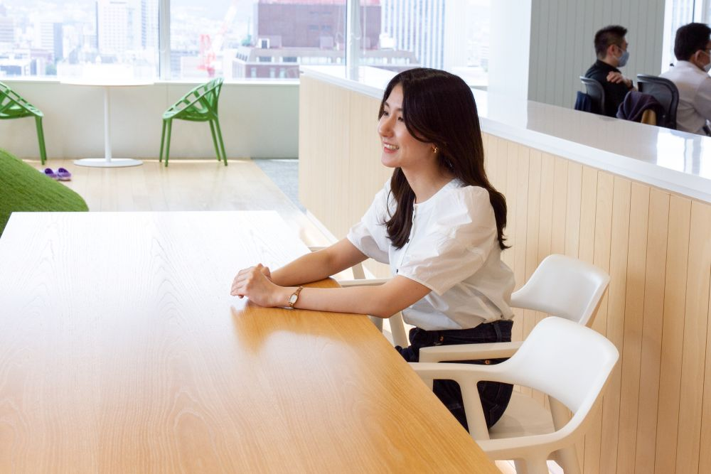
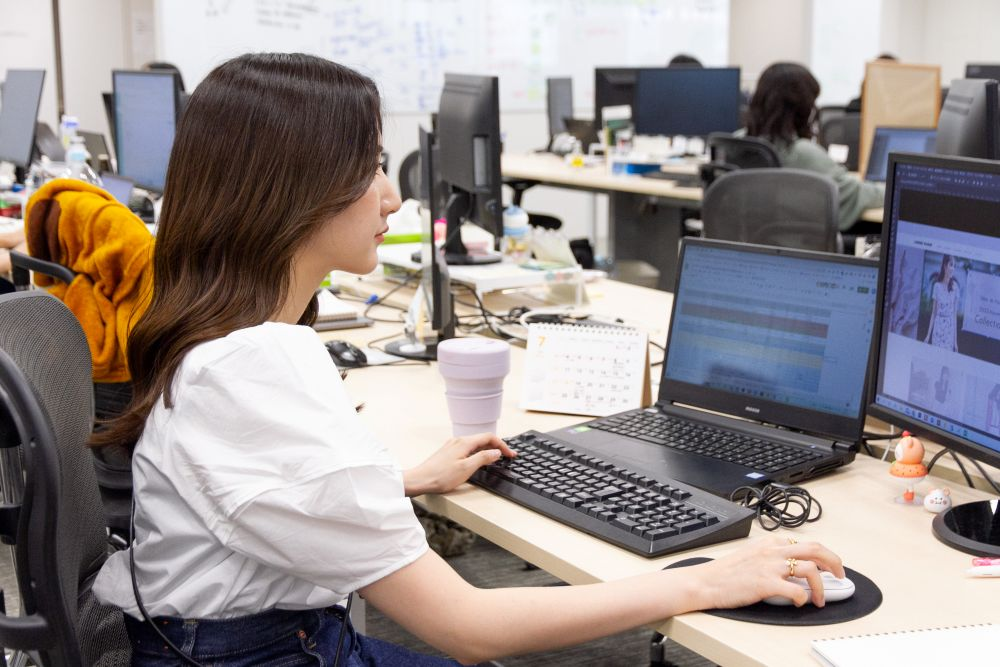
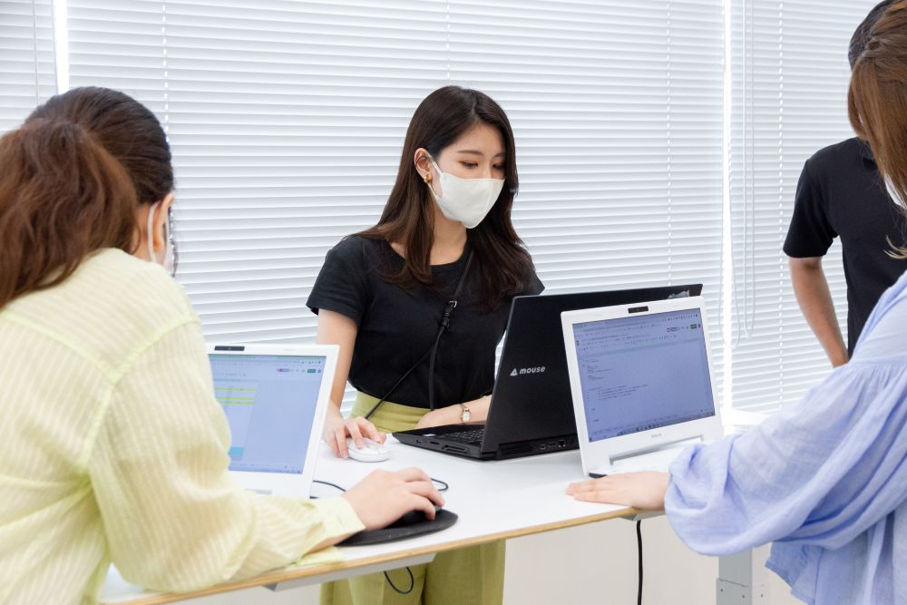
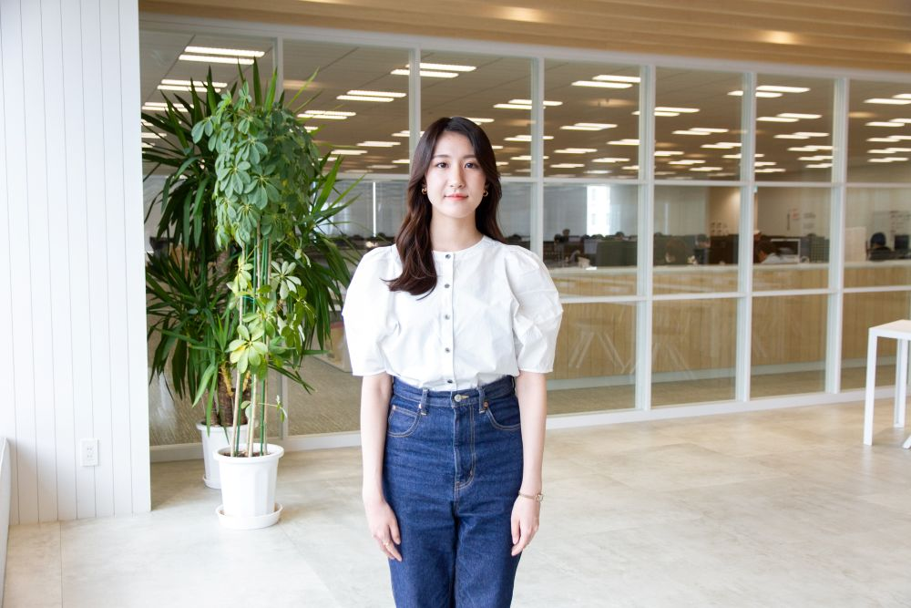

先輩や同期とともに
日々学びながら
リーダーとして成長
関 夏美 Seki Natsumi
EC事業部 | Webデザイナー

入社を決めた理由について教えてください。
ファッション関連のデザインに興味がある自分に、ぴったりな会社
元々、ファッション関連のデザインの仕事に興味があったので、自分の理想にぴったりな会社だと感動し、入社を考えたのが大きなきっかけでした。大学3年生の頃に、ダイアモンドヘッドでWebデザイナー職のインターンシップに参加しました。それまではグラフィック以外のデザインを経験したことがなかったので初挑戦でしたが、そこで体験したバナー作成が非常に楽しかった思い出があります。
また、優しく教えてくれた先輩やきれいなオフィスも印象的でしたし、札幌にいながら有名なアパレルブランドのデザインに携わることができる会社はなかなか無いと思い、ダイアモンドヘッドへの入社を決めました。

どんな仕事をしていますか？
また、仕事するうえで心掛けていることについても教えてください。
チームリーダーとして、メンバーが円滑に業務を遂行できるよう臨機応変に対応
現在は、ECサイト5件分のディレクションを担当しています。その他に制作業務として、バナー・特集ページのデザイン、メルマガ作成、コーディング、サイト更新、進行管理なども行っています。基本的には、ご依頼内容を土台にして制作を進めますが、ユーザーに商品や施策内容がさらに魅力的に伝わるようなデザインの提案も行っています。
また、グループ内に複数あるチームの内の1チームのリーダーも担っています。週1でチームミーティングを実施しメンバーの稼働調整を行ったり、他チームリーダーと集まって、情報共有や改善点の意見交換なども行っています。メンバー全員が円滑に業務を遂行できるよう臨機応変に対応することが求められるため、チームを運営するために欠かせない業務となります。デザインは個人作業が多い印象を持たれるかもしれませんが、コミュニケーションも非常に重要であると感じる部分が多いです。

自身の成長についてと、今後の目標について教えてください。
数値検証を基に、デザインのアップデートと改善を繰り返し、売り上げに貢献したい
私は、入社4年目になる時にチームリーダーになりました。入社してからそれまでは、個人の範囲でしか考えられていない部分も多く、メンバー全員の事を考える時にプレッシャーを感じる場面もありましたが、現在では同期や先輩とのミーティングや会話を重ねて、日々学びながらリーダー業務に取り組んでいます。
今後は、デザイナーとしてトレンドに合わせて柔軟なデザインをする、よりクリエイティブなデザインに挑戦する等、デザイン力の向上を目標にしています。また、数値検証を基に毎回アップデートしたデザインを提案し、改善を繰り返し行うことで、クライアントの売り上げに貢献ができるよう努めていきたいです。
リーダーとしては、より働きやすい環境や、チーム全体の生産性を上げるにはどうすれば良いかという事を常に考え、視野を広げて行動できるように努めていきたいです。

入社を希望する方へひとこと

ただデザインやコーディングを行うだけではなく、クライアントと直接やり取りし、自ら考えて進行や提案を行う場面が多いのも、弊社のデザイングループの特徴です。
また、服装の自由や社内イベント、ダイアモンドヘッドでお取引させて頂いているブランドから商品を選ぶことができるバースデープレゼント制度があること等、日々のモチベーションをあげる制度も充実しております。
私もそうだったように、アパレルへ興味がある方にとって、とても魅力的な業務を担っている会社だと思います。